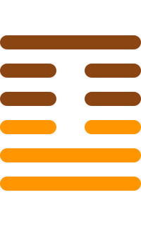

第四十一卦
损卦

卦辞
有孚，元吉，无咎，可贞，利有攸往。曷之用，二簋可用享。
损卦象征减损、损失与节制。卦辞意为：有诚信，大吉祥，没有灾害，可以坚守正道，利于有所前往。用何物祭祀？二簋可用于祭祀。损卦教导我们适当的减损有时是必要的，节制才能获得真正的益处。
彖传
损，损下益上，其道上行。损而有孚，元吉，无咎，可贞，利有攸往。曷之用，二簋可用享。二簋应有时，损刚益柔有时，损益盈虚，与时偕行。
彖传说：损，损下益上，其道上行。损而有诚信，大吉祥，没有灾害，可以坚守正道，利于有所前往。用何物祭祀？二簋可用于祭祀。二簋应有时，损刚益柔有时，损益盈虚，与时偕行。
象传
山下有泽，损。君子以惩忿窒欲。
象传说：山下有泽，就是损卦。君子应当效法这种精神，惩治忿怒，抑制欲望。山下的泽水被山限制，象征节制减损的重要性。
爻辞
初九：已事遄往，无咎，酌损之
已事遄往，无咎，酌量减损之。
初九爻位于最下方，及时减损。事情已毕，速往无咎，酌量减损，表示及时行动的重要性。
九二：利贞，征凶，弗损益之
利于坚守正道，征伐凶险，不减损而增益之。
九二爻得中，不宜减损。利于坚守正道，征伐凶险，不减损反而增益，表示适时的增益。
六三：三人行，则损一人；一人行，则得其友
三人行，则损一人；一人行，则得其友。
六三爻位置不当，损益之道。三人同行，则减损一人；一人独行，则得其友，说明损益的辩证关系。
六四：损其疾，使遄有喜，无咎
损其疾病，使速有喜，无灾害。
六四爻接近君位，减损疾病。减损疾病，使之迅速好转，有喜无咎，表示及时的减损。
六五：或益之，十朋之龟弗克违，元吉
或益之，十朋之龟弗克违，大吉祥。
六五爻居中尊位，增益之喜。有人增益之，十朋之龟不能违背，大吉祥，表示天命所归。
上九：弗损益之，无咎，贞吉，利有攸往，得臣无家
不减损而增益之，无灾害，坚守正道吉祥，利于有所前往，得臣无家。
上九爻位于极点，增益之道。不减损反而增益，无咎，坚守正道吉祥，利于有所前往，得到臣子而无家，表示无私奉献。